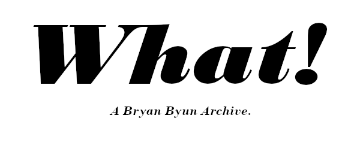

✎
A Note From Hannah.
A note from Hannah will live here. It will be awesome.
✎
This site is an archive of the works of Bryan Byun, it includes his podcasts (oftentimes with Hannah), his blogs, and his writings; some of his social media posts, chats, and pictures; and remembrances from friends and admirers. This site will change occasionally based on new material found/received; all changes will be documented in the changelog below. If you have something you'd like to share, please send it to the email address below.
changelog | reach out: archivesbsb gmail